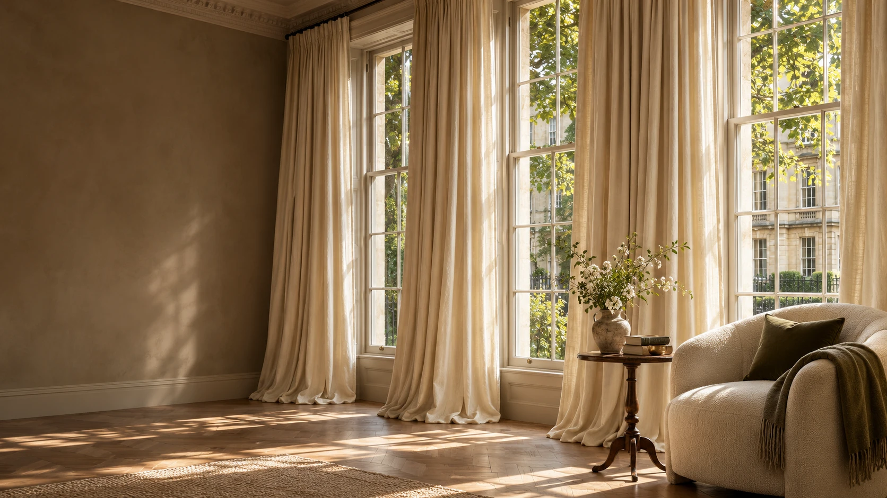
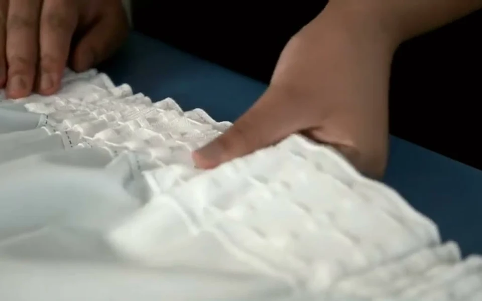
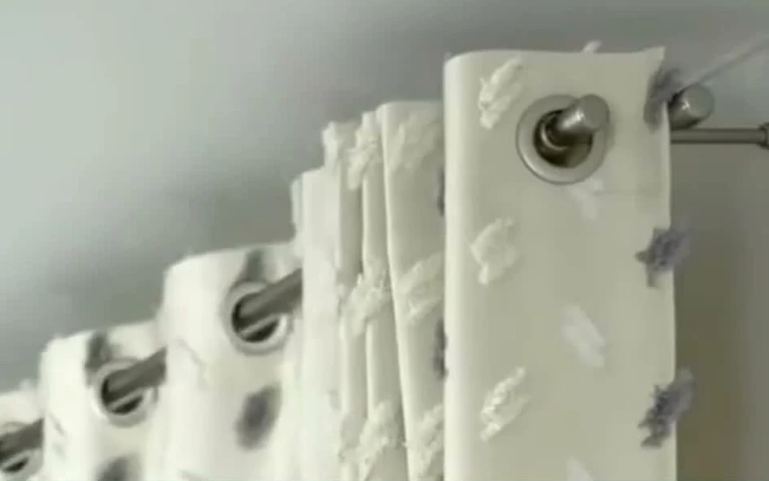
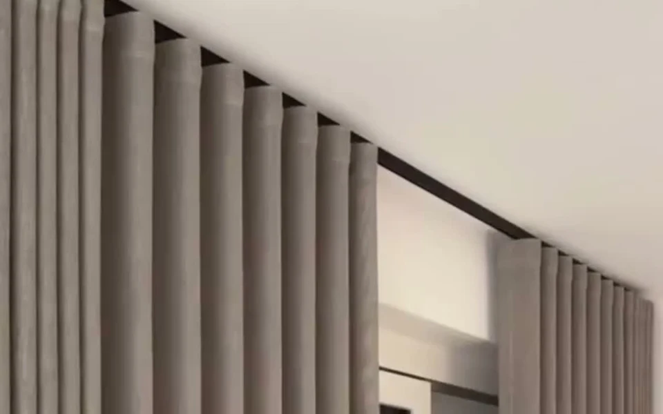
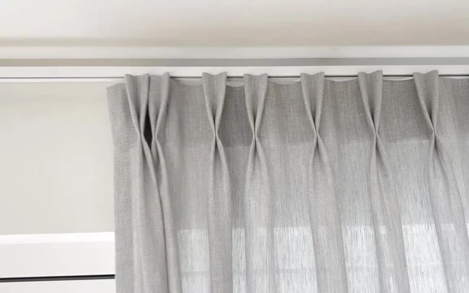

WELCOME BACK

THE CURTAINSUK HANGING GUIDE
How to hang
your curtains.
A beautiful finish.
A little guidance, every step of the way.
FOUR HEADINGS. YOUR PERFECT FINISH.
Which curtains are yours?
Choose your heading to watch the film
and make a plan with your measurements.

01 / THE HANGING GUIDEPencil pleat
Soft gathers, with heading tape on the back.
Gather to your width, position the hooks and hang.

02 / THE HANGING GUIDEEyelet
Metal eyelets fitted into the fabric.
Thread your pole, anchor the ends and dress the folds.

03 / THE HANGING GUIDEWave
Smooth, alternating curves on a track.
Plan your 80 mm carriers and 16 cm hook spacing.

04 / THE HANGING GUIDEPinch pleat
Structured pleats already sewn into the heading.
Fit your metal pin hooks and follow the sewn pleats.
A FINISH TO FEEL PROUD OF
Made for your curtains.
At your own pace.
- 01
Watch
See the full process in a short film.
- 02
Measure
Enter your details for a personal hanging plan.
- 03
Hang
Follow one step at a time, with close-up clips.
Your measurements and progress stay saved in this browser, ready for next time.